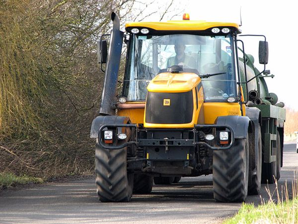
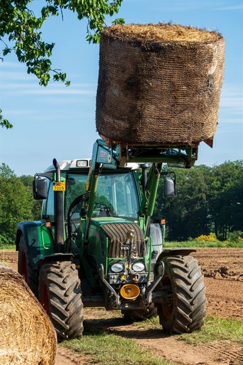
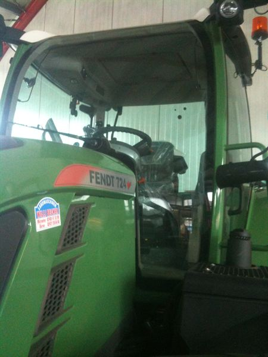
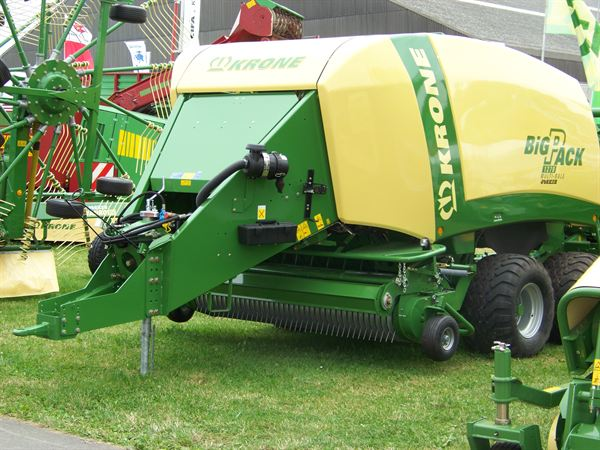
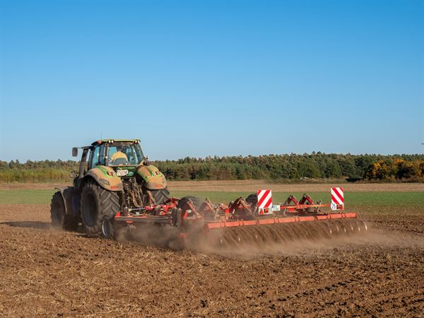

🚜 Bauernhof-Konzept (Mock-Up)
So wird Liams Spiel ungefähr aussehen – kein echtes Spiel, nur Vorschau
1Vogelperspektive auf den Hof
🏠Wohnhaus
🏚️Scheune
🏗️Silo
🐮Kuhstall
🔧Werkstatt
🐔Hühner
⛽Tankstelle
🏪Hofladen
🏠 Gebäude am Rand · 🌾 16 Felder in 4×4 in der Mitte · 👨🌾 Liams Avatar · 🚜 Traktor (mit Finger ziehbar) · gelbe Felder = reif zum ernten
2Maschinen unten als Karten – wischbar
Liam tippt Maschine an → Avatar steigt drauf → fährt damit
Aktive Karte (grünes Glühen) = aktuell gewählte Maschine. Liam kann zwischen seinen 14 freigeschalteten Maschinen wischen.
3Verkauf mit Mathe-Aufgabe ⭐ (Liams Idee)
Beim Verkauf der Ernte/Milch poppt eine Rechen-Aufgabe auf. Richtig = voller Preis. Falsch = halber Preis.
💡 Klassen-3-Mathe wird automatisch geübt: Mal-Rechnen mit Geld („8 Eier × 12 ct"), Mal mit Stoffmenge („3 Felder × 16 Säcke Weizen × 5 €"), Geteilt („48 € Erlös auf 6 Tage = pro Tag?"), Sachaufgaben mit echten Hof-Daten.
4Stall-Zoom: Tiere füttern + melken
Liam tippt auf Stall-Gebäude → Zoom auf Innenraum:
🐮Kuh 1
satt · 8L Milch
🐮Kuh 2
hungrig 🌾
🐮Kuh 3
satt · 6L Milch
🐔Huhn 1
3 Eier
🐔Huhn 2
5 Eier
🐷Schwein
satt
🐑Schaf
Wolle reif
🐝Bienen
2 Glas Honig
Tippe auf Tier → Aktion (Füttern, Melken, Eier sammeln, Wolle scheren, Honig ernten). Jede Aktion = neue Mathe-Aufgabe beim Verkauf.
5Touch-Steuerung (Liams Wahl: Ziehen)
Liam zieht den Traktor mit dem Finger über die Felder:
👆 → 🚜 → → →
Halten + Ziehen = Traktor bewegt sich + dreht sich automatisch in Fahrtrichtung. Verfolgt Reifenspuren auf dem Acker.
Andere Optionen die Liam getestet hat: Joystick / Tippen / Pfeile. Er hat sich für „Ziehen" entschieden – das fühlt sich am natürlichsten an, hat er bei der Demo gesehen.
6Was wir an Bildern brauchen
Für „gute Grafik" – realistische Bilder statt Emojis:
✅ Schon vorhanden (Wikimedia)

JCB Fastrac
✓ habe

Fendt 312
✓ habe

Fendt 724
✓ habe

BiG Pack
✓ habe

Deutz 9
✓ habe
❌ Brauche noch (Top-Down-Sprites + Tiere + Gebäude)
Was fehlt:
• Top-Down-Maschinen-Sprites (von oben fotografiert, klein, transparent) – aktuelle Bilder sind seitlich und zu groß für 2D-Top-Down
• Tier-Sprites: Kuh, Schwein, Huhn, Schaf, Pferd, Hund, Katze, Bienenstock (8 Stück)
• Gebäude-Sprites: Wohnhaus, Stall, Scheune, Silo, Werkstatt, Tankstelle, Hofladen, Biogas (8 Stück)
• Crop-Sprites: Weizen/Mais/Kartoffeln/Raps in 4 Wachstumsstufen (28 Stück)
• Avatar: Liam-Charakter Top-Down 4 Richtungen
• Boden-Texturen: Acker, Wiese, Weg, Beton
Wo holen?
1. Kenney.nl – riesige gratis Pixel-Art-Bibliothek mit Bauernhof-Sets (CC0, kommerziell nutzbar)
2. OpenGameArt.org – kostenlose CC-Sprites
3. itch.io Free Asset Packs (oft „Farm Tileset" gratis)
4. Wikimedia Commons für Pressefotos der Maschinen (von schräg oben fotografiert)
5. Selber rendern: Stable Diffusion / Midjourney mit Prompt „top-down pixel art tractor isometric" – sehr individuell, kostet ~5 €
Realistisch: Mix aus Kenney-Sprites (Standard-Sachen) + Wikimedia für Maschinen + selber rendern für Spezial-Sachen.
7Spielablauf-Beispiel (1 Tag)
- 🌅 Morgen: Liam loggt sich ein, sieht den Hof. „Heute solltest du Feld 3+4 ernten und Kühe melken."
- 🐮 Stall: 3 Kühe geben je 8 Liter Milch → Mathe-Aufgabe: „3 × 8 = ?" → richtig → 24 Liter
- 🚜 Mähdrescher Lexion auf Karte tippen → Avatar steigt rein → Touch-Steuerung über Felder
- 🌾 2 Felder ernten → 24 Säcke Weizen
- 🏪 Hofladen-Verkauf: „24 Liter Milch × 50 ct = ?" → richtig → 1200 ct = 12 €
- 🛒 Geld nutzen: Diesel kaufen, neue Maschine sparen, Hof ausbauen
- 🌙 Abend: Tag-Statistik + 2× Lern-Münzen für die Haupt-App
✅ So sieht das fertige Spiel aus.
Sag Papa wenn du loslegen willst, dann fängt er an zu bauen!